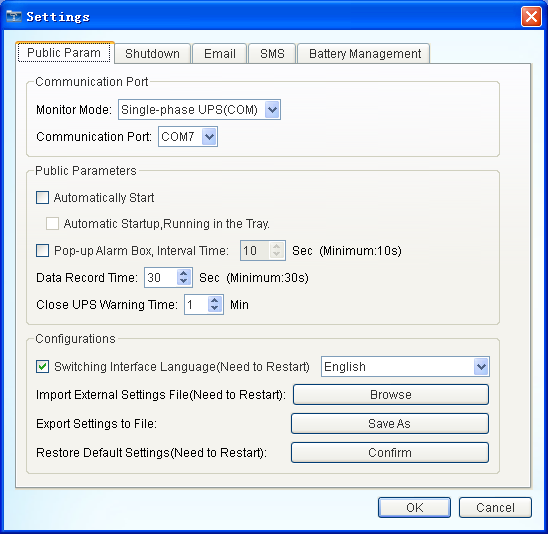
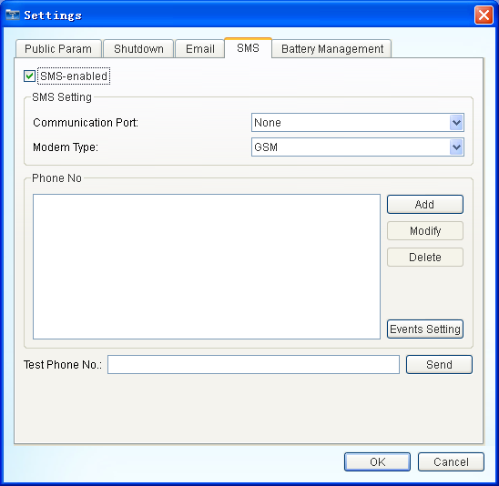
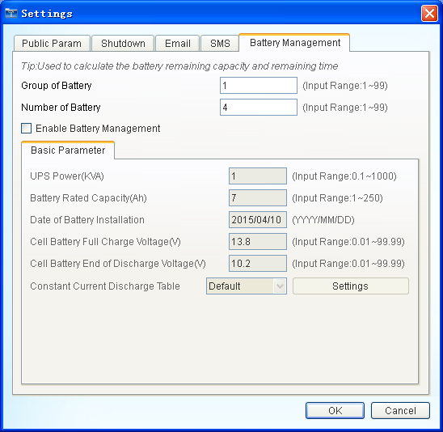

| UPSmart User Manual |
| Settings |
|
|
|  |
| Figure 1:Public Param |
 |
| Figure 2:Shut Down |
 |
| Figure 3:Email |
|  |
| Figure 4:SMS |
|  |
| Figure 5:Battery Management |
Note: The battery management functions only as an auxiliary function, the results are not entirely accurate.